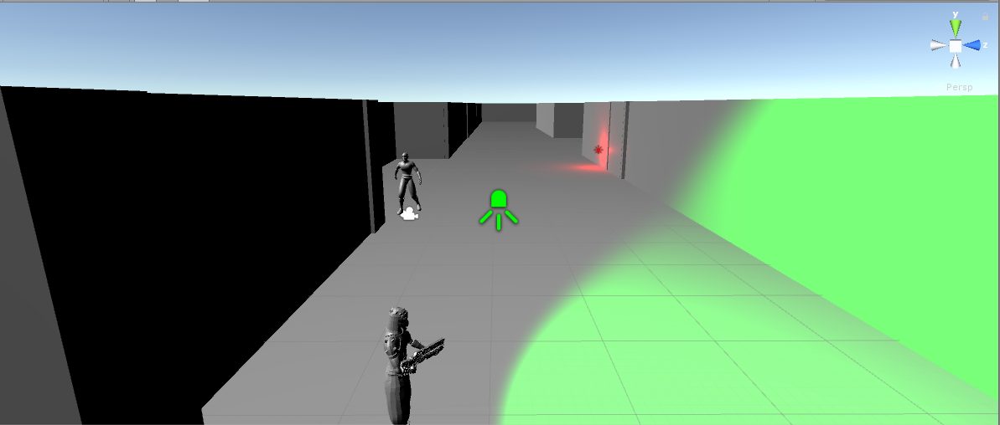
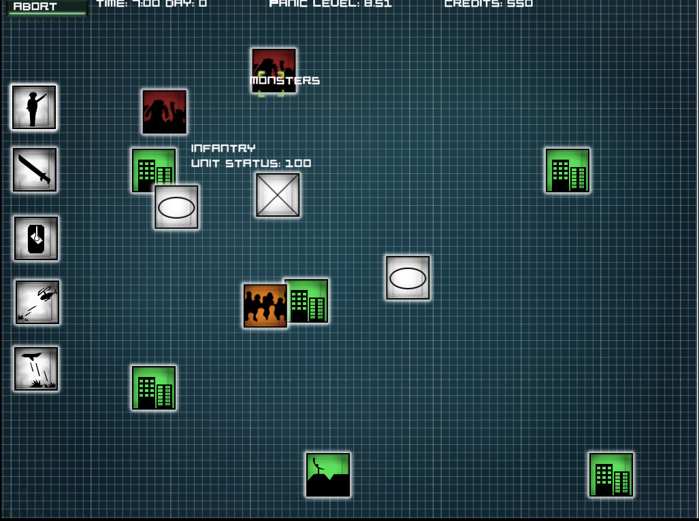
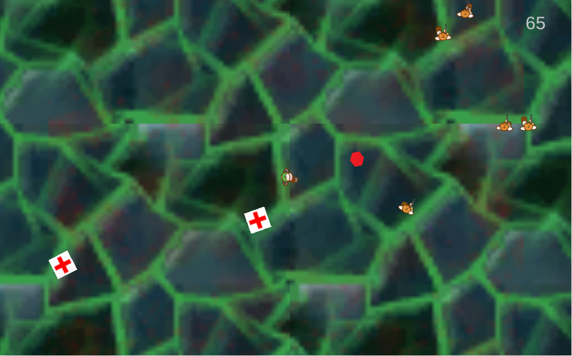
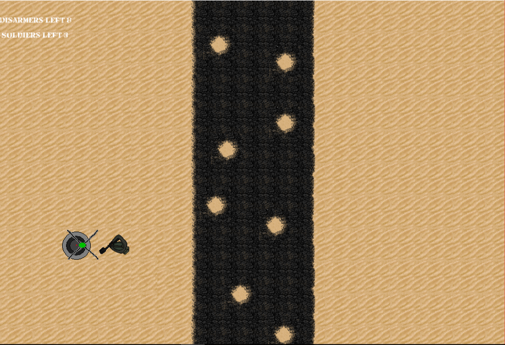

open-stealth
More software project than real game. Goal is to make other Unity3D stealth game projects easier to begin.

CS student · Web developer · Game maker
I make games in Unity3D and GameMaker — mostly for fun. I also have a blog (partially in Polish). Check out my projects below.

More software project than real game. Goal is to make other Unity3D stealth game projects easier to begin.

Protect cities from monsters invasion as a high rank military commander. Inspired by Pacific Rim and XCOM.

Game jam entry — Home of Nerds Jam 2017. Avoid scientists, but don't grab too many health packs or you'll die.
Team: @JotKaToJa, @DominikMagdalenski, @czkawka, @vahaal
Started as a classic Windows game clone, ended as a thrilling minesweeping simulation.